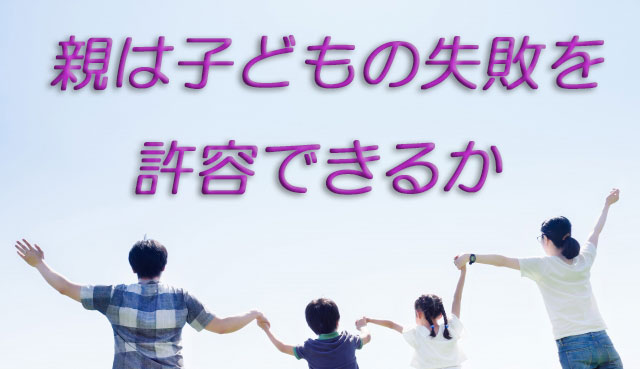

人生を長くやっていると色々気づくことが多くなるが、そのひとつは「若いときにはたくさん失敗をしたほうがよい」ということ。
失敗という言葉の響きはネガティブで故に多くの人は何とかそれを回避しようとする。
だが私は若いときの失敗体験、挫折体験はやはり貴重だと思っている。特に思春期くらいまでは一定の「苦悩」はむしろ必要だとさえ感じる。
私もたくさんの失敗や挫折を経験したが、今になって見れば「あれらがあったからいまの自分がある」と思えるからだ。
つまり若いときの「失敗」はその後の「成功」への架け橋になり得るということ。
たとえば高校受験に失敗した子は大学受験で成功しやすい。部活などの人間関係で悩んだ子は後々リーダーシップを発揮しやすい。
他にも各人各様の失敗、挫折、苦悩があるが何かにチャレンジしたが結果は思わしくないとか、人間関係でもみくちゃになった…などはそのときはヒドイ経験と思っても、実は次の展開へつながるチャンスだったと後で述懐できることが多い。
但しここで注意したいことがある。
それは単に失敗経験があればよいというのではないこと。失敗や挫折と向き合いそこからきちんと学ぶことが大切となる。
つまり失敗が成功への架け橋となるには条件があるということだ。
失敗がそのまま失敗になるのは、それを他人や環境など他者のせいにし、被害者意識に囚われたときだ。
そのとき失敗は貴重な成功の種とはならず、隠しておきたい人生の汚点になってしまうだろう。
さてここで親の出番となる。親はもっと子どもの失敗を許容すべきだということ。
最近気になるのは、子どもが失敗することを恐れる親がとても多いこと。特に母親にその傾向が強いと感じている。
親が先回りして子どもに失敗させないようアレコレ配慮してしまう。心配し、注意しお膳立てする。結果として子どもは「失敗するチャンス」を逃してしまう。
親の恐れが子どもに伝わり、子どもにとっても何より「失敗は悪いこと」「何としてでも回避すべきもの」と捉えてしまう。
これだと子どもは失敗に対する「免疫」が育たないまま大人になり、やがて社会に出たときにただ一度の失敗、ささいな挫折で心が折れてしまうことにもなりかねない。
最近そのような若者が増えている。
だから親として次のような心構えが必要である。
まず第1に「自分は子どもの失敗を恐れすぎていないか」と常に自問し、その恐れる気持ちに気づいていること。
第2に子どもが失敗したときに、それを責めたり叱ったりするよりも「その出来事と向き合い、そこから何を学べるか」を子どもに促すこと。
私が中学生のとき担任教師がよく「お前たちはもっと悩め苦しめ」と口グセのように言っていたが、それは「問題から逃げるな」という教えだった。
その上で私たちが次に何にチャレンジすべきか温かく励ますのが常だった。
そして―ここが肝心なのだが―万一私たちが自分の力ではどうしようもない窮地に陥ったときは身をていして私たちを守ってくれた。つまり私たちをよく観察し本当の危機に際しては身体を張って守る姿勢を常にもっていたのだ。
ここから親のとるべき第3の心構えが導き出される。
すなわち子どもの様子をよく観察し、危機に際しては即座に「子どもを守る」という覚悟をもつということ。
危機は人によって違うが親としての直感で気づく場合もあれば、不幸にして大きな問題となって顕在化することもあるが、最終的には親である自分が子どもを守り切るという姿勢である。
まとめると、子どもの失敗は将来の成功につながる大切な経験でありむしろ宝物だと考える。失敗をネガティブなものから肯定的な出来事へと考えを変換すること。
そうして自分（親）の中にある「失敗を恐れる気持ち」を薄めた上で、子どもがその体験と向き合い学ぶよう促すこと。
最終的には自分が子どもをしっかり守るという覚悟をもちながら。
そうすれば子どもはささいな失敗を恐れず自由に伸び伸びと羽ばたくことができる。多くの経験を積みながら意味ある体験へと昇華していくことが可能となるだろう。
なぜなら親であるあなたの大きな愛と許容に包まれた空間の中に、自分は解き放たれていると実感できるからだ。
エンライテックの詳細を見る ＞＞